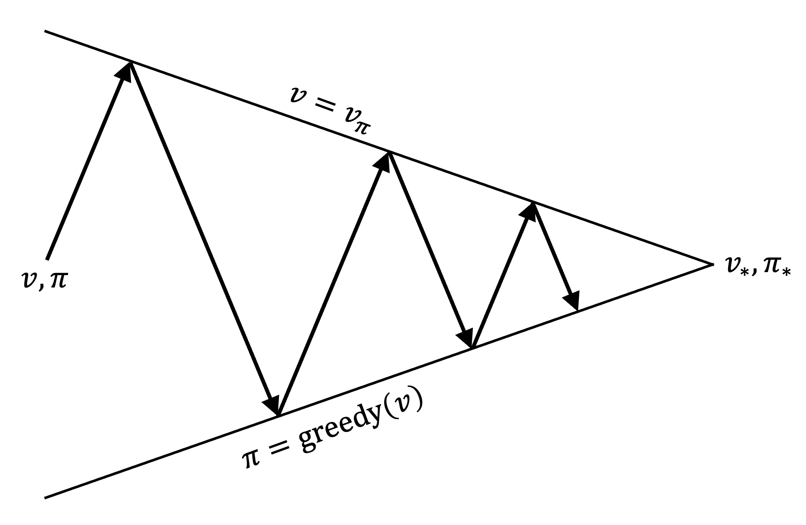

Dynamic Programming for Solving MDPs
Revised October 15, 2024
The value functions and policies note is optional but recommended background reading.
Dynamic programming (DP) is a method for solving complex problems by decomposing them into simpler subproblems. A problem is suitable for DP if it exhibits optimal substructure, where the optimal solution can be constructed from the solutions of its subproblems, and overlapping subproblems, where the same subproblem recurs and is solved multiple times, often through recursion. In RL, the Bellman optimality equations provide this structure, enabling the determination of the optimal value function.
Policy Iteration
Policy Iteration identifies an optimal policy by iteratively evaluating and improving an initial arbitrary policy. The algorithm proceeds as follows: initialize a policy \(\pi_0\) and assign arbitrary values to \(V(s)\) for all states \(s \in \mathcal{S}\). In each iteration \(k > 0\), evaluate the current policy \(\pi_k\) for all \(s \in \mathcal{S}\) using the state-value Bellman expectation equation, yielding \(V_{\pi_k}\). From \(V_{\pi_k}\), derive an improved policy \(\pi_{k+1}\) as the greedy policy with respect to \(V_{\pi_k}\). This process is represented as:
\[ \begin{equation*} \pi_0 \xrightarrow{\text{evaluation}} V_{\pi_0} \xrightarrow{\text{improvement}} \pi_1 \xrightarrow{\text{evaluation}} V_{\pi_1} \xrightarrow{\text{improvement}} \pi_2 \xrightarrow{\text{evaluation}} \dots \xrightarrow{\text{improvement}} \pi_* \xrightarrow{\text{evaluation}} V_* \; . \end{equation*} \]
In the “evaluation” step, the state-value Bellman expectation equation is used to assess the current policy. In the “improvement” step, a new policy is defined as:
\[ \begin{equation*} \pi_{k+1}(s) \gets \text{argmax}_{a} \left( R(s, a) + \gamma \sum_{s’ \in \mathcal{S}} P(s, a, s’) V_{\pi_k}(s’) \right) \;. \end{equation*} \]
 |
Value Iteration
Policy Iteration requires a policy evaluation step in each iteration (see line 2 of the pseudocode). Policy evaluation itself is an iterative process, often necessitating multiple passes through the state set (as outlined in lines 2-9 above). Value Iteration, by contrast, ceases policy evaluation after a single pass through the state set.
From the state-value Bellman optimality equation:
\[ \begin{equation}\label{eq:sv_opt_bellman} V_* (s) = \max_{a} \left( R(s,a) + \gamma \sum_{s’ \in \mathcal{S}} P(s,a,s’) V_* (s’) \right) \;, \end{equation} \]
we observe that, given the solution for \(V_*(s’)\), determining \(V_*(s)\) becomes trivial. Thus, by first assigning values to the terminal states, we can work backwards to compute the optimal value for all preceding states. This principle underpins Value Iteration.
Starting from terminal states and working backwards is straightforward in acyclic MDPs. However, in cyclic MDPs, a challenge arises. As expressed in the state-value Bellman expectation equation:
\[ \begin{equation}\label{eq:sv_bellman} V_\pi (s) = \sum_{a \in \mathcal{A}} \pi(a \mid s) \left( R(s,a) + \gamma \sum_{s’ \in \mathcal{S}} P(s,a,s’) V_\pi (s’) \right) \;, \end{equation} \]
to determine the value of any state, we must know the values of all possible subsequent states. Since the values of non-terminal states are not known a priori, we cannot directly use this equation to compute state values. Without knowledge of \(V_*(s’)\), we cannot work backwards from terminal states to compute \(V_*(s)\).
This issue is easily resolved by initializing arbitrary values for non-terminal states and iterating through the state set until convergence. Specifically, we update the value function by iterating over all states and computing each state's value using the greedy action with respect to the current value function:
\[ \begin{equation*} V(s) \gets \max_{a} \left( R(s,a) + \gamma \sum_{s’ \in \mathcal{S}} P(s,a,s’) V(s’) \right) \;, \end{equation*} \]
until convergence. In effect, we transform the Bellman optimality Equation \(\eqref{eq:sv_opt_bellman}\) into an iterative update rule.
 |
Policy Iteration and Value Iteration both operate on a key principle: they update the estimated value of a current state based on the estimated values of future states (see line 6 in the Value Iteration pseudocode, for example). This concept, known as bootstrapping, is fundamental to many RL algorithms.
Generalized Policy Iteration
Policy Iteration and Value Iteration address two fundamental subproblems: policy evaluation, which estimates \(V_\pi\), and policy improvement, which generates a new policy \(\pi'\) by making the current policy \(\pi\) greedy with respect to \(V_\pi\). In Policy Iteration, this distinction is explicit. In Value Iteration, it is less obvious. However, it becomes clearer when recognizing that Value Iteration is a special case of Policy Iteration, characterized by a single policy evaluation step followed immediately by policy improvement. Indeed, most reinforcement learning methods depend on the sequential application of policy evaluation and policy improvement.
By definition, any change in a policy \(\pi\) influences the actions chosen in a state \(s\). According to Equation \(\eqref{eq:sv_bellman}\), modifying \(\pi\) also affects the value of state \(s\). Since the value of a state \(V(s)\) is defined as the discounted sum of future rewards, changing the state's value impacts the values of other states. Therefore, adjusting \(\pi\) changes the entire value function \(V\). As \(V\) updates, the best actions change as a consequence, meaning the policy must be modified. This cycle of updating the policy and its corresponding value function is known as generalized Policy Iteration (GPI).
|  |
| Image from Reinforcement Learning: An Introduction (2018) Richard S. Sutton and Andrew G. Barto |
Once the two processes stabilize — when \(V_\pi\) is consistent with \(\pi\), and \(\pi\) is greedy with respect to \(V_\pi\), satisfying the Bellman optimality equation — the policy and value function are jointly optimal.
Proofs
Both Policy and Value Iteration are guaranteed to converge to the optimal policy. The intuition for Policy Iteration is as follows: since \(\pi_{k+1}\) is strictly better than \(\pi_k\) (unless converged), each policy is unique. In a finite MDP, where \(|\mathcal{S}| < \infty\) and \(|\mathcal{A}| < \infty\), convergence is guaranteed after at most \(|\mathcal{A}|^{|\mathcal{S}|}\) iterations. This figure represents the total number of possible policies, each corresponding to a unique assignment of actions across all states. Since Policy Iteration improves the policy in each step, and no policy is revisited, it must converge at or before all possible policies have been evaluated. At convergence, \(\pi_{k+1} = \pi_k\), meaning \(\pi_{k+1}\) is not an improvement over \(\pi_{k}\) indicating \(\pi_{k}\) is a greedy policy, selecting actions that maximize expected rewards. Therefore,
\[ \begin{equation*} V_{\pi_k} = \max_{a} \left[ R(s,a) + \gamma \sum_{s’ \in \mathcal{S}} P(s,a,s’) V_{\pi_k} (s’) \right] \;, \end{equation*} \]
which satisfies the Bellman optimality equation. A more formal proof is given in the DP proofs note.
References
- Planning by Dynamic Programming, Lectures on Reinforcement Learning (2015)
David Silver
- Reinforcement Learning: An Introduction (2018)
Richard S. Sutton and Andrew G. Barto
- Introduction to Algorithms, Third Edition (2009)
Thomas H. Cormen, Charles E. Leiserson, Ronald L. Rivest, and Clifford Stein
- Algorithms for Reinforcement Learning, Synthesis Lectures on Artificial Intelligence and Machine Learning (2019)
Csaba Szepesvari
- Value Iteration, Policy Iteration and Policy Gradient, Online Learning and Decision Making, (2019)
Yuan Zhou
- Markov Decision Processes and Exact Solution Methods, UC Berkeley CS287 Advanced Robotics (2012)
Pieter Abbeel
- Dynamic Programming (2021)
Adam Ivora